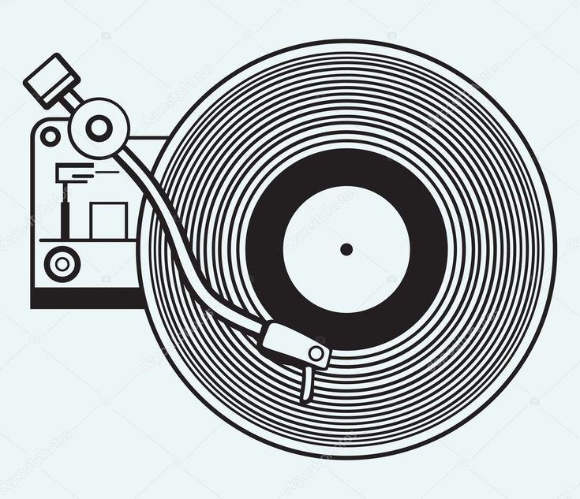

Introduction to the Vinyl Era
The vinyl era represents the foundation of recorded music. Vinyl records became widely popular during the early 20th century and remained the main music format for several decades. They introduced people to home music listening and shaped the music industry.
Rise of Vinyl Records
Vinyl records gained popularity due to their superior sound quality compared to earlier recording formats. Music was stored in grooves on the disc and played using a needle on a record player. This allowed listeners to enjoy rich and warm analog sound at home.
Key Features of Vinyl Records
Vinyl records provided a unique and immersive listening experience. Even today, many music enthusiasts prefer vinyl for its sound and physical design.
- Warm and natural analog sound
- Large and artistic album covers
- Long-lasting physical format
Impact on Music Culture
The vinyl era influenced how artists created albums and how audiences listened to music. Listening to vinyl required attention and care, making music a focused activity rather than background noise.

Decline and Legacy
With the arrival of cassette tapes and compact discs, vinyl records gradually lost popularity. However, vinyl has made a strong comeback in recent years and continues to be valued for its classic sound and cultural importance.